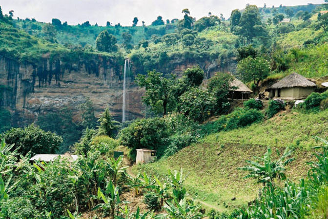

Day 1: Arrival at Bwindi Impenetrable National Park
Our company driver will meet you at your hotel in Entebbe or Kampala and drive you to Bwindi Impenetrable Nati
onal Park. This is a long drive of about 8 hours, with a lunch break along the way. Despite the long distance,
the drive will take you through a variety of landscapes, including tropical rain forests, savannah fields,
and the terraced hills of Kigezi, also known as the Switzerland of East Africa. You will arrival late in th
e evening at your lodge for relaxation, dinner, and overnight.
Accommodation option:
Budget: Broadbill camp, Trekkers Tervan Cottages, Rushaga Haven Lodges, Bwindi Gorilla Conservation Camp
Mid-range: Broadbill camp, Trekkers Tervan Cottages, Rushaga Haven Lodges, Bwindi Gorilla Conservation Camp
Luxury: Nkuringo Bwindi Gorilla Lodge, Clouds Mountain Gorilla Lodge, Buhoma Lodge, Volcanoes Bwindi Lodge,
Chameleon Hill lodge among others
Day 2: Gorilla trekking in Bwindi National Park
Morning: Given the physical demands of gorilla trekking, you will need a substantial breakfast before heading to
the Park Headquarters at 7:00 a.m. for a pre-tracking briefing. At 8:00 a.m., you will proceed to the jungles to
track the adorable mountain gorillas in their natural habitat, which is characterized by thick forest covered
in mist. Trekking takes 2-6 hours, and once sighted, you will only have one hour with the assigned gorilla fam
ily to study their behavior and take photos before returning to the lodge to relax.
After a rewarding trek through the jungle, we sit in the forest among the mountain gorillas, listening to them co
mmunicate with one another. Marvel at the sheer size of the dominant adult male gorillas, known as Silverbacks,
and have one of Africa's most moving wildlife encounters. After lunch in the forest, we take a well-deserved r
est or go bird watching.
We return to our peaceful lodging to rest and recover from our unforgettable gorilla trek in Uganda's Bwindi Fo
rest.
Afternoon: If you still have energy, you will undoubtedly continue on for a cultural walk to Batwa villages to
immerse yourself in their ancient lifestyles and be entertained by their traditional dances. We then return to
our lodging.
Day 3: Drive to Queen Elizabeth National Park
After a delicious breakfast treat, drive to Queen Elizabeth National Park, which is blessed with a lot of
beauty, including lakes, forest, savannah grassland, and wetlands. We will enter the park through the Ishash
a sector, which is famous for its rare tree-climbing lions, and if we are lucky, we will see these rare spe
cies before continuing to the northern side of the park, where we will spend the night. Have a meal.
Accommodation option:
Budget: Mweya Peninsula, Ishasha Sector, and Kyambura Game Reserve.
Mid-range: Bush lodge, Engiri safari lodge in Rubirizi, King fisher in Kichwamba, Ihamba Safari, Buffalo lodge
Luxury: Mweya safari lodge, Mazike safari lodge, Ishasha wilderness camp, Queen Elizabeth Katara lodge among others
Day 4: Game drive and afternoon boat cruise on Kazinga Channel
Morning: After an early morning breakfast, we head for a game drive through the Kasenyi Plains where you are likely to spot
the African tree climbing lions and the elusive leopards, Uganda kobs, Elephants, buffaloes, bushbucks, Defassa waterbucks and
warthogs in addition to at least 200 bird species. Lastly, after this amazing 2-3 hours’ activity, head back to the Lodge for
lunch and relaxation as you prepare to go for the boat cruise
In the afternoon, you will go for the famous launch trip on the Kazinga Channel where Hippos, Nile crocodiles, elephants,
buffaloes and Uganda Kobs, as well as bird species like Kingfishers and shoebill storks, can be spotted.
Day 5: Queen Elizabeth National Park to Kampala
As you watch the sun rise in the wild, wake up and take your breakfast meal. After, check out of the hotel to proceed for
Kampala with lunch en-route and thus the end of your five-day safari.